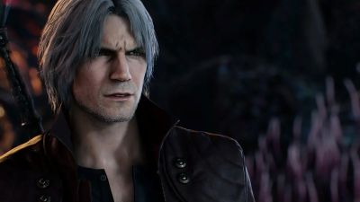
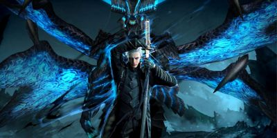
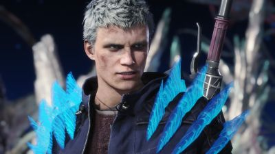
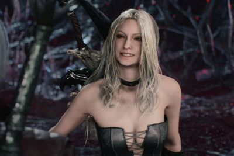
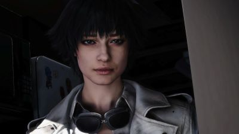

Dante é filho do lendário cavaleiro demoníaco Sparda e da humana Eva. Após o ataque de demônios que matou sua mãe quando ele ainda era criança, Dante passou a dedicar sua vida à caça de demônios. Ele abriu sua própria agência chamada Devil May Cry, aceitando trabalhos para eliminar criaturas demoníacas que ameaçam o mundo humano. Apesar de seu jeito irreverente, sarcástico e despreocupado, Dante possui grande senso de justiça e costuma proteger os humanos dos demônios.

Vergil também é filho de Sparda e Eva, porém possui uma personalidade totalmente diferente da de Dante. Frio, calculista e obcecado por poder, Vergil acredita que a força absoluta é a única maneira de evitar sofrimento e fraqueza. Ao longo da série, ele se torna rival direto de Dante, travando batalhas intensas com o irmão. Vergil busca dominar o poder demoníaco de seu pai e ultrapassar todos os limites possíveis.

Nero é um jovem caçador de demônios criado na cidade de Fortuna. Ele cresceu dentro da Ordem da Espada, uma organização religiosa que venerava Sparda. Nero se destacou por sua força extraordinária e por possuir um braço demoníaco chamado Devil Bringer, que lhe concede habilidades sobrenaturais. Mais tarde é revelado que Nero é filho de Vergil, tornando-o sobrinho de Dante.

Trish é uma demônio criada por Mundus, o imperador demoníaco. Ela foi criada para se parecer com Eva, a mãe de Dante, com o objetivo de manipulá-lo. No entanto, durante os eventos da história, Trish acaba se voltando contra Mundus e se torna aliada de Dante, passando a trabalhar ao lado dele na luta contra demônios.

Lady é filha do cientista Arkham, um homem que tentou obter poder demoníaco e acabou se tornando um inimigo perigoso. Após descobrir os crimes do pai, Lady dedicou sua vida a caçar demônios e impedir que humanos abusassem desse poder. Ela é uma das poucas personagens totalmente humanas que conseguem enfrentar demônios poderosos graças à sua habilidade com armas.
